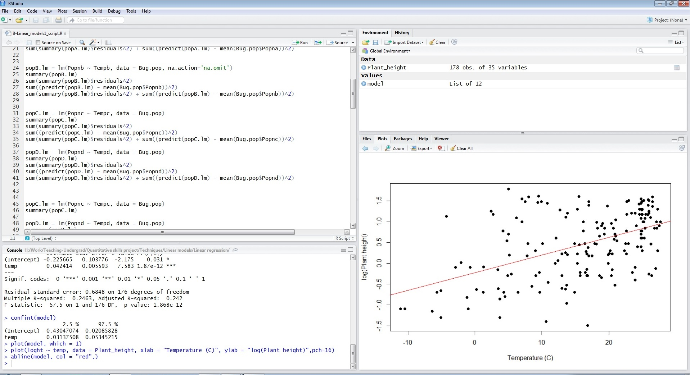

Recomendamos usar R Studio como una interfaz fácil de usar para usar R.
Primero, instala la última versión de R - descárgala desde aquí. Segundo, instala la última versión de R Studio - descárgala desde aquí.
Una vez que hayas instalado R y R Studio, necesitas establecer el directorio de trabajo. Este es el lugar en tu computadora donde se pueden encontrar los archivos de datos que se importarán y donde se guardarán los scripts de R (los archivos que guardan tu código).
En R Studio, puedes establecer el directorio de trabajo con los menús (Session >> Set Working Directory >> Choose Directory) o con una línea de código que indique la ruta de la carpeta en tu computadora:
setwd("Drive:/Folder1/Folder2")Si estás trabajando con cualquiera de los archivos de datos de ejemplo en este sitio, primero deberás descargarlos a una carpeta en tu computadora y especificar esa carpeta como el directorio de trabajo.

R Studio tiene cuatro paneles:
1.- El panel superior izquierdo es el editor (o ventana de script) donde puedes ver tu script de R. Ejecutar código desde aquí es tan simple como presionar Ctrl+Enter cuando el cursor esté en la línea o líneas de código que deseas ejecutar.
2.- El panel inferior izquierdo es la consola (o ventana de comandos) donde también puedes ejecutar líneas de código (escribir código al lado de > y presionar Enter), pero también es donde aparecerá cualquier texto o resultado numérico.
3.- El panel superior derecho es la ventana del espacio de trabajo que muestra los diferentes objetos de R que estás utilizando actualmente. Estos pueden ser conjuntos de datos u objetos creados por varios análisis.
4.- El panel inferior derecho tiene:
Puedes cambiar el tamaño de estos paneles arrastrando los bordes de las ventanas.
Debes guardar todo el código que uses para un análisis o gráfico determinado. Utiliza los menús en RStudio para crear un nuevo script de R (File >> New >> R script) y guárdalo con el ícono de disco o en el menú (File >> Save). Revisa Gestión de proyectos para obtener consejos sobre cómo estructurar estos archivos.
Si tus análisis o gráficos requeridos necesitan un paquete que no está incluido en la instalación inicial de R, puedes instalar nuevos paquetes desde los menús (Tools >> Install packages) o desde el panel en la parte inferior derecha. Una vez instalados, se pueden cargar con la función library (recomendado) o marcando la casilla al lado del nombre del paquete (no recomendado). Es mejor práctica utilizar la función library en tu script, ya que te recordará qué paquetes deben cargarse.
Por ejemplo, este código cargará el paquete maptools si está instalado en tu computadora.
library(maptools)Nuestros módulos de ayuda sobre Buenas prácticas para escribir scripts y Importación de datos y limpieza de datos.
Autor: Alistair Poore y Will Cornwel.
Año: 2016.
Última actualización: Jun. 2023.